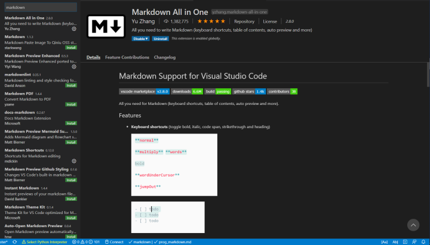
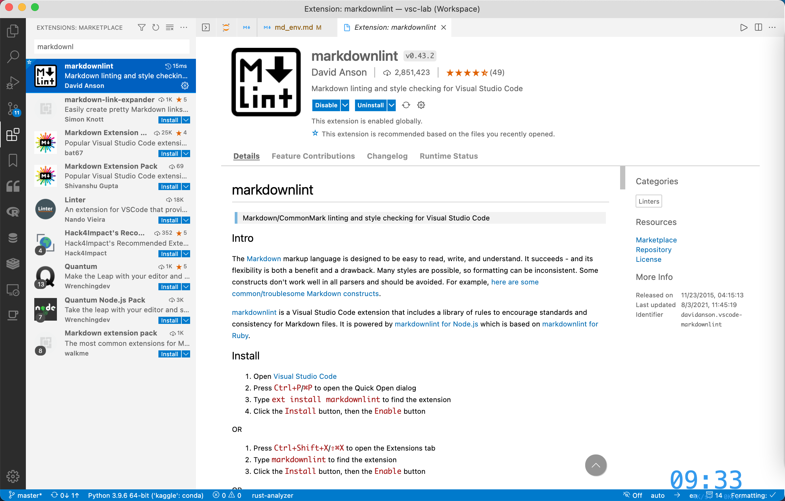
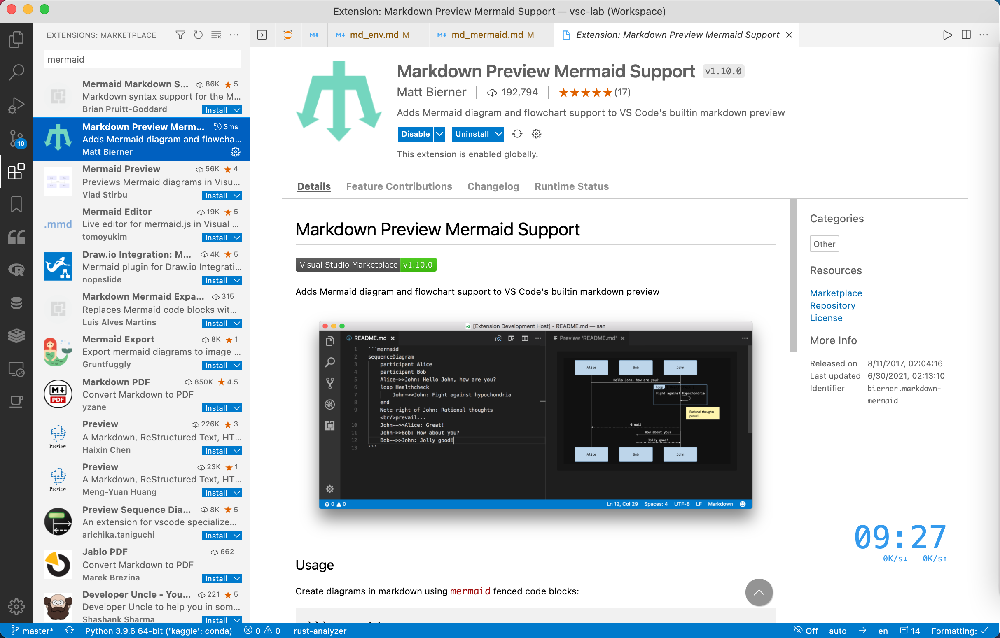
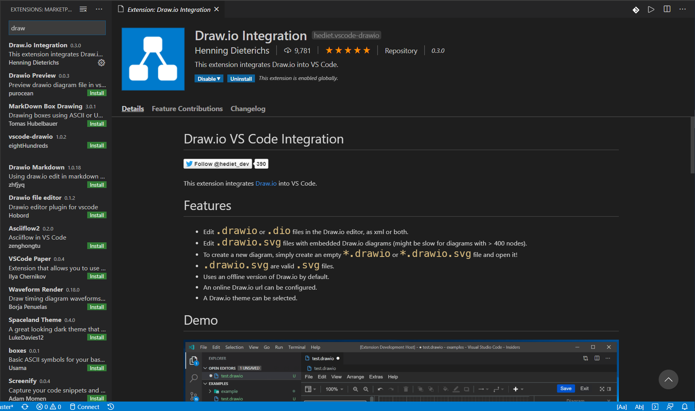
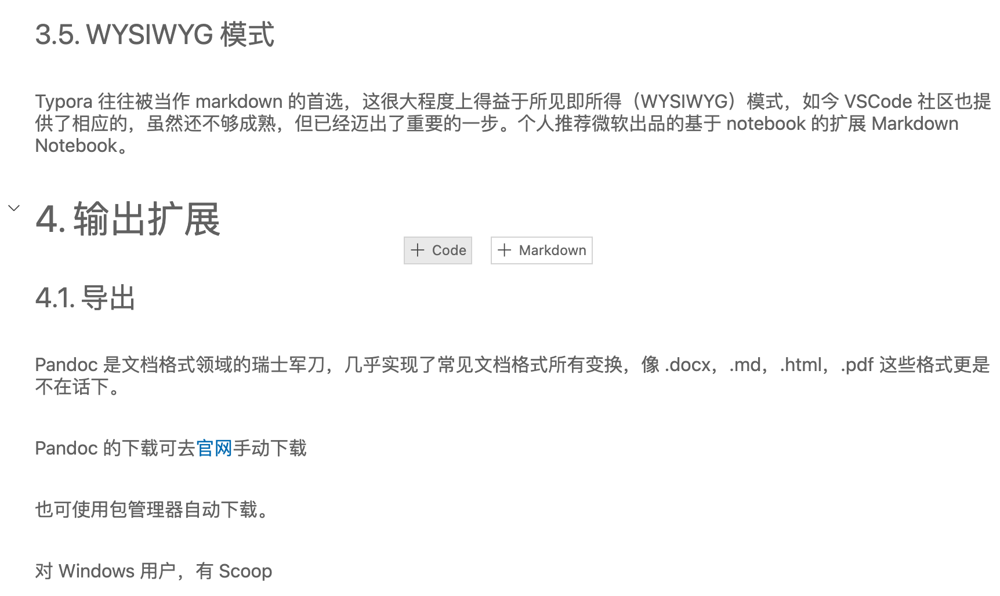
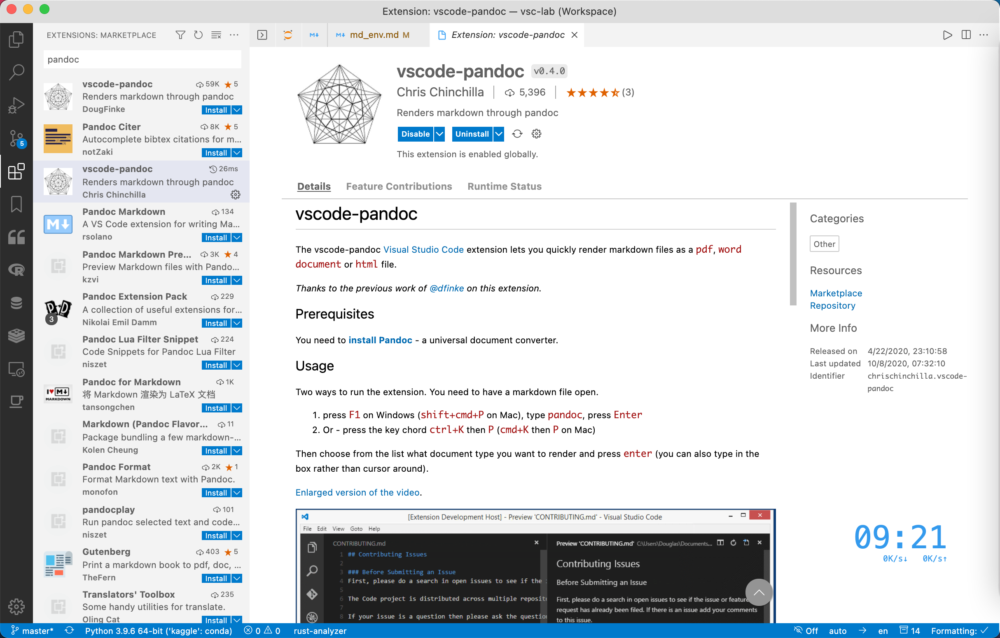

搭建 Markdown 强大写作环境（VSCode）
Contents
搭建 Markdown 强大写作环境（VSCode）¶
1. Markdown 编写环境概览¶
Markdown 是一种易于读写的轻量级的标记语言，编写出的作品简洁美观，近年来受到了越来越多的追捧，被广泛地用于日常写作，乃至电子书发表。与此同时，一系列优秀 Markdown 编辑器应运而生。其中较为著名的有，Typora（免费，跨平台）、MarkText（开源，跨平台）、Zettlr（开源，跨平台）、MacDown（开源，macOS）等等。
VSCode 是当下最流行的代码编辑器，拥有丰富的扩展，这也使其成为最强大的文本编辑器之一（拒绝伤害 Vim 党人及 Emacs 党人），搞定 Markdown 自然不在话下。与上面提到的编辑器相比，VSCode 的明显优势有：
集成的布局：大纲（outline）、工作区（workspace）；
强大的补全：LaTeX 公式；
丰富的扩展：方便整合其他工具（详见下文的功能扩展部分）；
2. 语法扩展¶
VSCode 默认是支持 Markdown 的，但还是有必装下面 3 个插件提高写作效率。
Markdown All in One
mardownlint
Markdown Preview Mermaid Support
2.1. Markdown All in One¶
如名称所述，这是个大一统型的扩展，集成了撰写 Markdown 时所需要的大部分功能，是 Markdown 类插件中下载榜榜首。可认为是 VSCode 中的 Markdown 必备扩展。其功能涵盖：
快捷键自
动生成并更新目录
自动格式化表格
LaTeX 数学公式支持

2.2. markdownlint¶
这是个功能强大的 Markdown 语法检查器，可以帮助你书写出规范的文档，同时避免书写错误导致文档无法渲染。个人观点，认为这个也是必装扩展。

2.3. Markdown Preview Mermaid Support¶
很多时候，写文档难免需要绘制一些用于说明的插图，如流程图、甘特图等，这个时候，若另开一个应用画图，再导入文档，则略显繁琐。前文提到的 MPE 扩展支持的 mermaid.js 可轻松解决这一难题。简单说，mermaid.js 就是一个 Markdown 的绘图工具包
Markdown Preview Mermaid Support 支持 mermaid 预览。

mermaid 语法介绍，可参考本专栏姊妹篇[Markdown 绘图]。
3. 编辑扩展¶
3.3. 文档绘图¶
虽然有 mermaid，但有时候我们总会需要绘制一些复杂的图形。这时，可以使用 VSCode 商店里大名鼎鼎的 Draw.io 的内嵌扩展，安装完毕后三连：➡️ 新建 .drawio 文件 ➡️ 傻瓜绘图 ➡️ 导出为需要的格式。

3.4. 字数统计¶
这里推荐 Word Count CJK，可对各种字符进行统计，安装扩展后，在 setting.json 中修改
{
"wordcount_cjk.activateLanguages": ["markdown", "plaintext", "latex"],
"wordcount_cjk.statusBarTextTemplate": "中文：${cjk} 字 + 英文：${en_words} 词",
"wordcount_cjk.statusBarTooltipTemplate": "中文字数：${cjk} \\n 非 ASCII 字符数：\\t${total - ascii} \\n 英文单词数：${en_words} \\n 非空白字符数：${total - whitespace} \\n 总字符数：${total}"
}
至此，VSCode 已经实现了 Typora 等 Markdown 编辑器除所见即所得（WYSIWYG）之外的全部功能。
3.5. WYSIWYG 模式¶
Typora 往往被当作 markdown 的首选，这很大程度上得益于所见即所得（WYSIWYG）模式，如今 VSCode 社区也提供了相应的，虽然还不够成熟，但已经迈出了重要的一步。个人推荐微软出品的基于 notebook 的扩展 Markdown Notebook。

这个扩展目前还处于开发早期，不能显示图片，但微软出品 + Notebook 框架，前景很好，后续有希望增加运行代码块等功能。
4. 输出扩展¶
4.1. 导出¶
Pandoc 是文档格式领域的瑞士军刀，几乎实现了常见文档格式所有变换，像 .docx，.md，.html，.pdf 这些格式更是不在话下。
Pandoc 的下载可去官网手动下载
也可使用包管理器自动下载。
对 Windows 用户，有 Scoop
scoop install pandoc
对 macOS 用户，有 Homebrew
brew install pandoc
安装完毕后，在 VSCode 中安装相关扩展，这里首推 vscode-pandoc，可实现 .md 到 .docx 以及.pdf 和.html 的变换。
对于.pdf 的变换，需要在 settings.json 中添加：
{
"pandoc.docxOptString": "",
"pandoc.htmlOptString": "--standalone --mathjax --shift-heading-level-by=-1",
"pandoc.pdfOptString": "--pdf-engine=xelatex -V CJKmainfont=\"Arial Unicode MS\""
}

4.2. 知乎发布¶
WPL/s 继承于 Zhihu On VSCode，可用于 Markdown 在知乎上一键发布，尤其适合存在大量图片和代码块的帖子，当然也在 VSCode 里看帖摸鱼。
比之曾经的初代扩展，其最有特色的功能之一是，支持元数据，可以在本地修改已经发布的帖子，只需在题头添加
---
title: [文章题目]
zhihu-url: [文章链接]
zhihu-title-image: [题图]
zhihu-tags: [知乎标签]
---
而且，作者非常人性化的把之前的扩展链接，从文章开头放在了文章结尾。之前讨厌的开篇一句话“本文使用。。。发布”不见了。
详情可参看其作者的介绍。